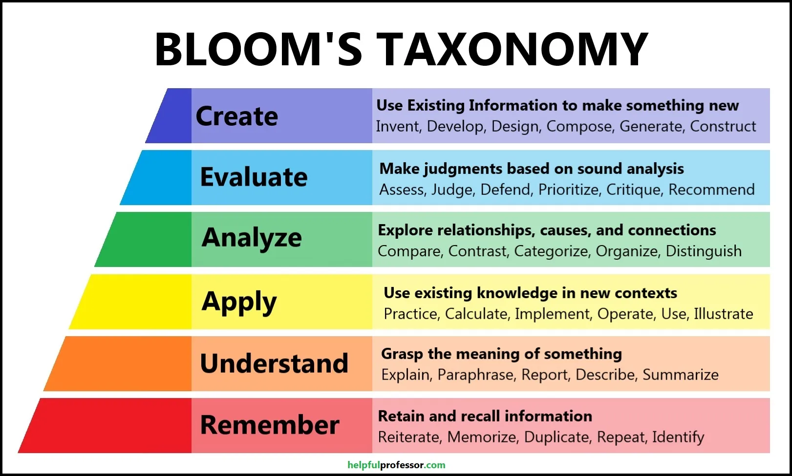

Learning
tags: #learning #second-brain last update: 2025-07-18
Introduction
Throughout this second brain, there is a set of presuppositions with regards to learning. They also form how I will produce learning material for the public with relations to subject being tackled here. These presuppositions are based on readings, research and personal experience. I've been teaching and instructing at various level (including college and university) for many years now, on various subjects.
This experience has led me to condense into the following three principles what "good learning" is: 1. Start from a solid foundation of sound principles 2. Bloom's taxonomy 3. Make use of the right methodology for learning
That is not to say that those will be silver bullet, or that you can't have more. But at the very least, these two are a good starting point.
Solid Foundation
I could list a bunch of principles that make planning and doing better, but I'll focus on some that I prefer/I think are more important to share:
Use Trusted Sources
Start with big names, people that have experience and learning under their belt, that you can point to something they have accomplished, etc. This is not an appeal to authority, rather it's more of an exclusion principle. GIVEN THAT: - There is an indefinite and immense amount of knowledge on the internet on most subject; - You cannot curate by yourself all the knowledge because you lack resources (time) and competence to do so; - You need some sort of starting point to learn (as just researching ad infinitum the best starting place would not make you learn the subject, but rather just learn about 'how' to learn the subject); and that - Chances are that through the Lindy Effect, big names/sources have a higher chance to be valid. THEN: - You should start with the trusted sources/big names in any given domain
For example, if you want to learn C, then read the Kernnigham & Ritchie book.
Plans Do Not Survive Reality - Or: Just Do It
Lots of people accumulate learning material but never starts learning. Some people learn a lot, but never apply it. Some people apply it, but never build something in production and/or useful to them. At some point, it's important to always aim for the next step, and leave as soon as possible the current step. The reason being that learning (like many other thing) is circular: you will come back to earlier steps on other subjects, or will want to go back to re-read something you've already read to refresh your memory, etc. This is normal. But you 'must' move forward. So just start.
You Do Not Survive Reality Without a Plan
The offset of the previous point is that it's important not to be blind. Set yourself some SMART goals and some constraints. These can be adopted from a mentor, a friend, a project/dream you have, etc. Readjust and reevaluate as you go, but never make this stops you (previous point override the current one).
Bloom's Taxonomy
 source
Bloom's taxonomy is a conceptual framework (not a definition of reality) to organize steps/levels of learning. The more someone mastered a level, the easier the next, but also the previous (e.g. if you understand better, it will be easier to make links and therefore to remember). The goal is to go up the pyramid by doing more and more complex learning in order to better learn a subject.
You should start with the goal to 'create' with your knowledge. But to do this, you need to be able to 'evaluate', to do this you need to 'analyze', and so on. The bottom line is that you need a logical and meaningful progression in your learning progress: this entails both that you actually progress (most people are too comfortable staying in the first three categories) and that you need to give yourself time (if you create right away, you might succeed, but you won't necessarily learn properly).
Learning Methodology
There are more I could give, but I'll go with four very important: - Active learning and recall - Feedback - Focus on core concepts - Learn from others I could have added "learn from experts", but it's already covered in the principles above.
Active Learning
Active learning, to summarize, is to understand that learning is not passive. You cannot 'receive' knowledge: school (or any learning environment) is not a dock station to download new knowledge. The more you are active, the more you'll learn. This can be done in various ways, but here are some of them: - When you learn, you must be focused, critical and intentional. Try to make associations; - Try to do active recalls from time to time by reusing, rereading, or rewriting on the subject. This should be used also to make links with other knowledge you have developed since last time; - Summarize what you learn, such as writing a second brain or a blog post, or anything of the sort. This can also lead you to try and teach someone or talk to someone about what you learned; and - Engage with the knowledge through projects or activities.
Feedback
It's important to get feedback. This challenges you to communicate (which simply by doing so, like the rubber duck, you integrate better), but also to be communicated. And through this receiving, you'll have to readjust your learnings, make correction, correct stuff, etc. All of this contribute. You can do this a couple of ways: - Open source / make public your code, and share it with friends, coworkers, etc. - Have a job with good code review and/or mentorship and/or pair programming - Make fun projects and share them on reddit and so on - Etc.
Focus on Core Concepts
It's easy to get lost in the weeds. Focus on what brings you value (in getting a job, in understanding something for a course, in completing a project, etc.). And when you do so, focus on the core. Although it's mostly fictitious, I think 80-20 rule applies here: 20% of what you'll learn will cover 80% of the important stuff. Don't get lost in the 80% left for just 20% value. Like we mentioned earlier, learning is circular, you'll come back to it. Generally, following strict learning material/documentation and having a project-based approach helps with this: if you have a project in mind, you have specific learning requirement, and so you'll focus on those.
Learn from Others
This might seem like a given, but it's important to mention. Learn from others by looking at their code, their project, their stream if you need to. In person learning (pair programming, mentoring, etc.) is even better. You get to readjust your mental model of what good programming is.
Conclusion
Learning cannot be relegated to just watching tutorials, reading blog articles, and then copy-pasting code. To truly learn, you need to apply yourself intently on the subject and aim for a logical and constant progression.